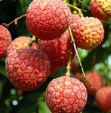

共盼春禧
共盼春禧
C O M I N G S O O N
00
days00
hours00
min00
sec"柏绿椒红事事新，隔离灯影贺年人。"
大年初一，“白鹤梁乙巳蛇年新春庙会”等您来打卡！
·中文
·English
·日本語
·En français
共盼春禧
00
days00
hours00
min00
sec"柏绿椒红事事新，隔离灯影贺年人。"
大年初一，“白鹤梁乙巳蛇年新春庙会”等您来打卡！
历史溯源
白鹤梁位于重庆涪陵城北长江中，全长1600米，平均宽度15米，因早年常有白鹤群集梁上展翅嬉戏、引颈高吭，故而人称白鹤梁。 白鹤梁傍水而存，随波而卧，涨水隐没、枯水显露，四季一现的情景，平添了考视价值和神秘性。
美丽传说
| 尔朱真人传说 | 鉴湖传说 | 荔枝园 | 榨菜的传说 |

|
 |
跨界合作
#大乔新皮肤白鹤梁神女#
“他们说，这是我的故事。因为我守着这江水涨落，一千二百年。” 但这其实，也是他们自己的故事。穿过千年时光，越过起伏群山、交纵山河——#大乔白鹤梁皮肤#带你重看这座火热山城的生活信念！
白鹤梁位于长江三峡库区上游，重庆市涪陵城北的长江中，是一块长约1600米，宽16米的天然巨型石梁。 白鹤梁有着“世界第一古代水文站”之称，具有极高的水文、科学和艺术价值， 记录了自唐代以来1200多年当地长江枯水水位变化的情况，也保留了大量文人墨客的吟咏诗文或游记题名。 此次王者荣耀携手重庆白鹤梁水下博物馆,为玩家们打造一款重庆味道的文创皮肤，线索就藏在这句话————“石鱼出水，以兆丰年”。
“白鹤梁神女“应该是什么样的？ 她要能聆听丰年祈愿，守护一方百姓平安， 她要能操控江水，听得懂波涛的话语，与长江中的生灵们如影随形， 她要和这里的人民一样，勇敢、火热、永远对生活充满希望。
神女守山城，石鱼兆丰年。 时代变迁中不变的夙愿，她听到了！
大乔白鹤梁皮肤将于近期的重庆x腾讯《王者荣耀》文化跨界合作发布会发布！
发布会由王者荣耀与重庆中国三峡博物馆及其下属的重庆白鹤梁水下博物馆合作开展！
【皮肤故事】大江之畔是世代居于此处的人们，春生夏长，秋收冬藏，他们总凭着十足的热忱和辛劳朝耕暮耘，用自己的双手延续着同样的梦想，是父辈将生长于此的土地连同期许交给子子孙孙，是千百代的人们祈愿同一个江水涨落后，石鱼出水丰年可期的愿望。 这些愿望让她凝实出护佑一方的力量，不曾随浪潮退去，比升沉世事更坚实地连接着她和这片土地。
【主题设计思路】“石梁长在，无谓浮沉”，升沉世事，石梁千古如一日地保留着人们对丰收的祈盼； 江浪有声，聆听心愿守护一方的神女便绝不会被时间浪潮覆没……
了解更多>>